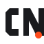

Estrategia y descubrimiento
Entender objetivos, proyectos nuevos o existentes y necesidades de producto.

CN PilotCN Pilot convierte una petición expresada con naturalidad en trabajo web y de aplicaciones, coordinado por Jefe de proyecto y revisable por las personas.
No hace falta diseñar prompts técnicos ni escoger agentes o skills. Jefe de proyecto inspecciona el contexto y coordina a los especialistas que necesita el trabajo; la ruta cambia según objetivo, estado y alcance.
Un ajuste localizado puede ir directamente a inspección y prueba. Un rediseño público material con dirección abierta puede necesitar revisión visual antes de comenzar la implementación. No todas las tareas recorren la misma secuencia.
Un índice por propósito, no un catálogo de herramientas ni una secuencia obligatoria.
Entender objetivos, proyectos nuevos o existentes y necesidades de producto.
Organizar páginas, definir dirección visual y diseñar interfaces cuando el scope lo requiere.
Frontend responsive, APIs y lógica; WordPress con temas personalizados de WordPress (Classic, Hybrid o Block), plugins y modelado de contenido, según el proyecto.
Pruebas, accesibilidad, rendimiento y seguridad según riesgo. Analytics solo con un objetivo de medición en alcance.
Para un proyecto web público nuevo o un rediseño material con dirección abierta, la ruta de diseño hace visible cada revisión humana. No todas las tareas necesitan este proceso.
* La implementación comienza después de la aprobación visual y solo si implementar está en alcance. No es una secuencia obligatoria para microcambios, proyectos existentes con dirección cerrada ni interfaces de aplicación; tampoco implica autoaprobación, publicación o despliegue.
En un proyecto existente se inspeccionan las fuentes vigentes y se conserva stack, estructura y comportamiento fuera del cambio solicitado. Las migraciones o rediseños mayores requieren alcance explícito.
Una interfaz ya aprobada puede optimizarse técnicamente preservando el resultado visual y conductual; esa optimización no autoriza un rediseño.
Para un rediseño público material con dirección abierta, la revisión visual sucede antes de comenzar la implementación. No es un gate para cada cambio ni para tareas de aplicación.
No hay push, despliegue, publicación, instalación de WordPress ni seguimiento de analytics por defecto. Cada acción requiere su alcance y autorización aplicables.
La ruta recomendada es /nuevo-proyecto para describir un proyecto nuevo o dar contexto a uno existente. Si ya tiene contexto, no hace falta repetir onboarding. El proveedor y modelo se configuran dentro de Kilo Code.